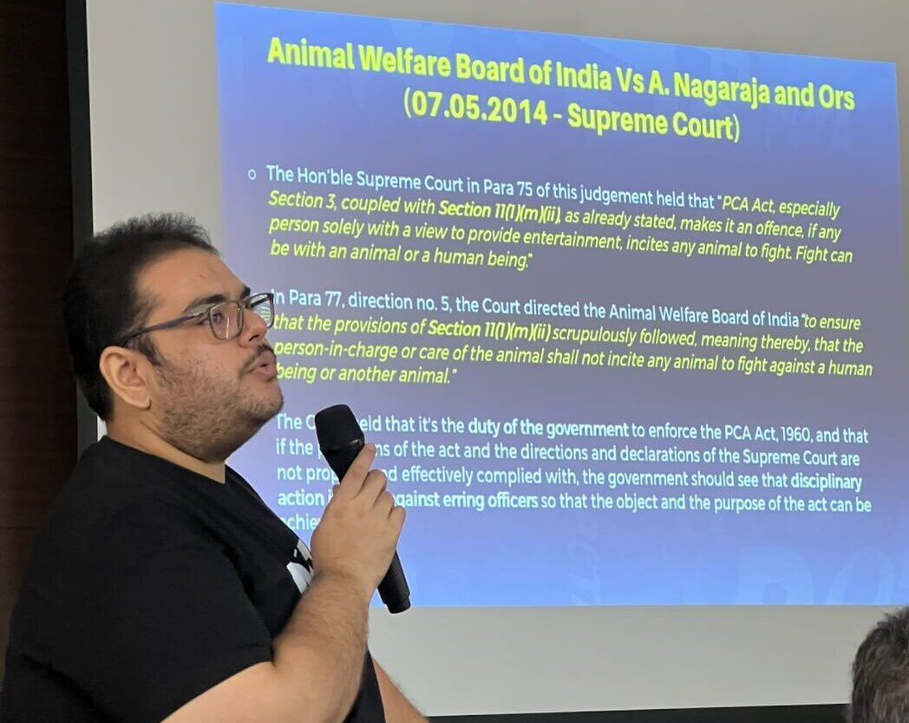

Knowledge Tools · 03
How to
speak to
the media —
better.
8 tips from OJW's media training with
Meet Ashar, PETA India.
Legal Advisor & Director of Cruelty Response
PETA India

Tip 01 of 08
Know your stuff
If you don't
understand it deeply,
don't speak
to the media.
Half knowledge weakens the cause — not just your argument.

Tip 02 of 08
Land the message
Your job isn't to answer everything.
It's to land
your message.
Whatever you're asked — bring it back to the core point.
03

Tip 03 of 08
Stay grounded
Don't get
defensive.
defensive.
Don't get
emotional.
emotional.
Stay calm.
Stay
factual.
The media decides how you're perceived.
04
Tip 04 of 08
The window
20
–30
seconds.
That's all you have to make your point land. If you can't say it clearly and quickly — it won't make it to the story.
05
Tip 05 of 08
Receipts beat rhetoric
Facts>Opinions.
Always.
Back every claim with data.
Use government sources wherever possible.
Facts = credibility. Credibility = coverage.


06
Tip 06 of 08
Discipline
One
campaign.
One
voice.
Mixed messaging across cities dilutes impact.
Stay aligned.

Tip 07 of 08
Practice = power
Prepare like the media will
challenge you.
(Well, it does get tough!)
Practice with teammates.
Ask the hardest questions.
Play devil's advocate.
08
Tip 08 of 08
Hand them the story
Make it
EASY
for the media.
01
Press release
3–4 tight, quotable paragraphs.
02
Strong image
Editorial-ready, high-res.
03
Clear headline
The hook they'll keep.
04
Ready spokesperson
One name. One number.
They will use what you give them.

Want the full session?
Watch the
complete
training.
Watch on YouTube
↗ Link in bio